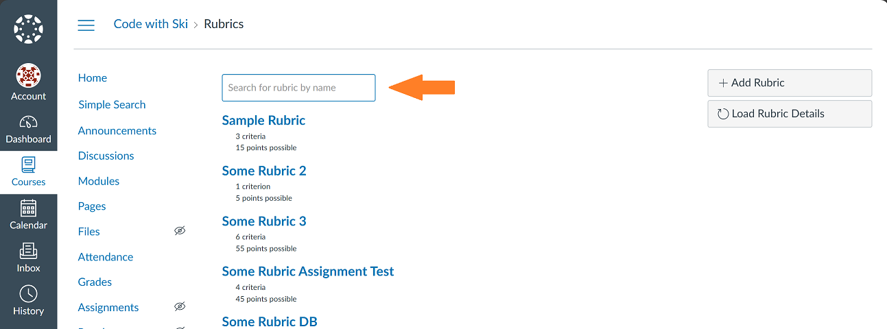

Course Mods
The following features are mods to areas within a Canvas course.
Global Course Mods
The following features are mods that apply to most/all areas of a course.
Enable sticky course header
This makes it so the course header remains sticky at the top. This is to help make it easy to know what course you are in even when scrolling down the page.
Enable course simple search
This adds a simple search functionality to a course. The link to activate it is found on the course navigation menu. The search will look for case insensitve matches to the given search value. The search results will highlight the matching search term/phrase.
It currently supports searching the following content areas (if selected): syllabus body, pages (title and body), assignments (title and body), discussion topics (title and body), announcement topics (title and body), file names, and module item names. The Canvas API is used to get the selected items and checck if the search value appears within them. Only data that the user has permission to view will show in the results.
Uses the Canvas LMS REST API to provide this feature.
Simple search course navigation position
This setting controls where the link to activate the simple search will be placed in the course navigation. The default position is set to '2' so that it will be placed after 'Home' on the course navigation menu. To adjust the position, go to the browser extension options and update this value.
Course Home Page
The following features are mods that apply to the home page in a course.
Add course statistics button
This feature adds a button to the course home page that will link to the course statistics page. Since the custom course reports are added on this page, it will help to make them more easily accessible.
Modules
The following features are mods that apply to the Module page in a course.
Add "Jump to Module" feature
This feature adds a list of links to each of the modules before the first module. This also adds a back to top link under each module. This will help with quicker navigation to the module that a user wants to get to, especially when there is a long list of module content.
People/Users
The following features are mods that apply to the People/Users page in a course.
Add export users button
This feature will add a button to allow an instructor/admin to export the list of users. This will only export the users that are currently loaded on the People page. For courses with larger enrollments, be sure all People are loaded into the table before clicking the export button.
Uses the Canvas LMS REST API to provide this feature.
Requires course admin permissions to use this feature.
Add hide inactive users feature
This feature allows inactive users to be hidden from view in the list of People. When enabled, it will default to have inactive users hidden. You can click the checkbox to make it so inactive users are visible again when needed.
Add section filter
This feature adds a section filter to the list of users in a course.
Uses the Canvas LMS REST API to provide this feature.
Add column sort buttons
This feature adds the ability to sort the table of users in a course. Each column heading is turned into a sort button to allow sorting by the desired value.
Groups
The following features are mods that apply to the Groups page in a course.
Add export groups button
This feature adds an export button to the group set panels. This will make it easier for users to review group memberships in bulk and it provides the data that is in the format compatible with the import feature.
Uses the Canvas LMS REST API to provide this feature.
Requires course admin permissions to use this feature.
Enable groups expand/collaps button
This feature adds an expand all/collapse all groups button on each group set. When it shows "Expand All", it will expand all currently collapsed groups when clicked. When it shows "Collapse All", it will collapse all currently expanded groups when clicked.
User
The following features are mods that apply to the User page in a course.
Add export access report button
This feature adds an export button on the user's access report within a Canvas course. This will download the data from the table as a CSV file.
SpeedGrader
The following features are mods that apply to the SpeedGrader page in a course.
Convert text-based links
This feature replaces text based links (begins with https:// or https://) with anchor elements to make them clickable links.
Statistics
The following features are mods that apply to the Statistics page in a course.
Add course reports
This feature loads in a series of custom reports on the course statistics page. This will help with pulling data about the course for review. The data can be viewed in the results table for each report and/or downloaded to CSV so the user can manipulate/use the data further in another application/script.
Current Reports:
-
Assignment Details
- Table data includes the following: assignment ID, name, description HTML, description text, due date, submission types, grading type, points possible, rubric grading, if omitted from final grade, if needs grading, if published, allowed attempts, if peer reviews, if anonymous grading, and if muted.
-
Submission Details
- Table data includes the following: submission ID, user ID, student name, assignment ID, assignment name, attempt, grade, raw score, points possible, submission type, submitted at, graded at, if excused, if missing, workflow state, submission comments, and associated rubric. If applicable, it includes the rubric score details.
- Report option(s) include the following: select all or a specific assignment, and submission states to include.
-
Grading To Do Report
- Table data includes the following: submission ID, user ID, student name, assignment ID, assignment name, SpeedGrader link, attempt, current grade, current score, points possible, if omitted from final grade, submission type, submitted at, days since submission, due date, days since due date, min of the days since, if excused, if missing, workflow state, and submission comments.
- Report option(s) include the following: select all or a specific assignment.
-
Missing Rubric Grade
- Table data includes the following: submission ID, user ID, student name, assignment ID, assignment name, SpeedGrader link, attempt, current grade, current score, points possible, if omitted from final grade, if rubric is used for grading, submission type, submitted at, if excused, if missing, and submission comments.
- Report option(s) include the following: select all or a specific assignment.
-
Grade History Report
- Table data includes the following: submission ID, user ID, student name, assignment ID, assignment name, SpeedGrader link, submitted at, workflow state, if grade matches current submission, grade, score, submission type, graded at, grader id, and grader name.
- Report option(s) include the following: select all or a specific assignment, and select all students, specific students, or students of a specific enrollment status.
-
Quiz Details
- Table data includes the following: quiz ID, title, quiz type, question count, points possible, if published, if has access code, if shuffle answers, time limit, allowed attempts, if show correct answers, if one question at a time, if requires LockDown Browser, and if requires LockDown Browser Monitor.
-
Discussion Details
- Table data includes the following: discussion ID, title, message, author, posted at, last reply at, if requires initial post, posts count, unread posts count, if published, if locked, discussion type, and assignment ID.
-
Discussion Replies Details
- Table data includes the following: author ID, author name, post ID, post parent ID, discussion title, message body HTML, message body text, created at, updated at, message type, and number of replies to discussion.
- Report option(s) include the following: select all or a specific discussion board.
-
Announcement Details
- Table data includes the following: announcement ID, title, message, author ID, author, created at, delayed post at, last reply at, if requires initial post, posts count, unread posts count, if locked, and if allows rating.
-
Page Details
- Table data includes the following: page ID, title, URL, created at, updated at, if published, if front page, and body.
-
Modules Progress Report
- Table data includes the following: user ID, name, module ID, module name, module item ID, module item name, requirement type, status, module percentage complete, and total percentage complete.
-
Enrollment Report
- Table data includes the following: enrollment ID, section ID, section SIS ID, section name, user ID, user SIS ID, user sortable name, user display name, user login ID, enrollment state, enrollment type, enrollment role ID, enrollment role, created at, updated at, last activity at, total activity time, current score, current grade, final score, final grade, last attended at, limit access to section, SIS import ID, start at, and end at.
- Report option(s) include the following: select enrollment states to include.
-
User Access Report
- Table data includes the following: asset access ID, asset code, asset group code, asset category, asset class name, user ID, user name, membership type, context ID, context type, content name, content display name, last access, first access, updated at, times viewed, times participated, and action level.
- Report option(s) include the following: select all users, specific users, or users of a specific enrollment state.
Uses the Canvas LMS REST API to provide this feature.
Assignments
The following features are mods that apply to the Assignments page in a course.
Add load assignment details button
The feature will allow a user to load in additional details about assignments that are useful for a quick audit of assignment settings. This includes the submission types, if it affects the final grade, and if it has an associated rubric. If it has an associated rubric, it also checks if it is used for grading and if any of the criteria are outcomes.
There is an additional option to include a check for Turnitin being enabled for an assignment.
Uses the Canvas LMS REST API to provide this feature.
Enable expand all/collapse all assignment groups button
The feature will add an expand all/collapse all assignment groups. When showing "Expand All", it will open any currently collapsed assignment groups when clicked. When showing "Collapse All", it will collapse any currently expanded assignment groups when clicked.
Add export grades button to assignment page
This feature adds button(s) on the assignment page to export grades. By default it will add the button "Export Grades" if it sees the ratio of graded assignment submissions on the right-hand side. By clicking this button, it will get the submissions for the assignments and export the data in a CSV file. It will include rubric scores too, if available. All data for a single submission will be on one row.
If it also sees a rubric on the assignment page, it will add a second button to "Export Grades by Criteria". This will also get all the submissions for the assignment. However, now each row will include the submission details and one of the criteria details at a time. This will result in repeated submission details data, but avoids the need to keep scrolling to the right to view all of the criteria details.
Uses the Canvas LMS REST API to provide this feature.
Add rubric used for grading indicator on assignment page
This feature adds an indicator to let the instructor know if the associated rubric is set to use for grading or not. If changes are made the indicator will update to let the user know to refresh the page to update the indicator.
Uses the Canvas LMS REST API to provide this feature.
Discussions
The following features are mods that apply to the Discussions page in a course.
Add export grades button to discussion page
This feature adds the ability to export grades for a discussion board. By default it will add the button "Export Grades" if it is an assignment. By clicking this button, it will get the submissions and export the data in a CSV file. It will include rubric scores too, if available. All data for a single submission will be on one row.
If the discussion is an assignment with a rubric, it will add a second button to "Export Grades by Criteria". This will also get all the submissions. However, now each row will include the submission details and one of the rubric criteria details at a time. This will result in repeated submission details data, but avoids the need to keep scrolling to the right to view all of the criteria details.
Uses the Canvas LMS REST API to provide this feature.
Rubrics
The following features are mods that apply to a Rubrics page in a course.
Add a search feature
This feature adds a search bar to the rubrics page. This will make it easier to find rubrics when there is a long list.
This is designed for the classic course rubrics page.
Add a load details button
This feature allows the user to load key details about the rubrics to help with quick audits of the settings. The details include the context type, if it has assignment associations, and if it has outcomes criteria.
This is designed for the classic course rubrics page.
Uses the Canvas LMS REST API to provide this feature.
Add drag-and-drop criteria rows feature
This feature allows the user to drag and drop rubric rows when a rubric is in an editing state. If you drag a row up from its current position, it will push the row it is dropped on down. If you drag a row down from its current position, it will push the row it is dropped on up.
This is designed for the classic course rubric edit page.
Add import rubric criteria feature
This feature allows a user to import the rubric details when adding/editing a rubric. The user will need to follow the proper format and can use the sample file as a reference point. They will need to enter/paste the data in the import dialog with the column values separated by a tab. When the data is formatted properly it will load the details into the edit rubric preview. This allows the user to review the imported data and how it was added to the rubric before creating the rubric. This also allows the user to add additional criteria and/or import outcomes.
There are two import options:
- Import: This will keep any exisiting criteria in the rubric and add new rows to the end for the new criteria that are imported.
- Import and Replace: This will remove any existing criteria from the rubric and add rows for the new criteria that are imported.
This feature also adds an export criteria button next to the "Import Details" button. This will allow the user to export the current criteria in the edit view to a tab separated values file that is in the proper format for importing data. This is useful if a user has a rubric started already and is looking to add more criteria and wants to organize the rubric order all at once, especially when working with outcomes. It can also be used to allow the user to get the data from one rubric to use as a starting template for a new rubric and/or to 'make a copy'.
This is designed for the classic course rubric edit page.
Uses the Canvas LMS REST API to provide this feature.
Add rubric associations report on rubric page
This feature allows the user to load in details about rubric associations. Available data loaded in table includes the following: rubric association ID, associated item ID, associated item type, if it is used for grading, purpose, if it hides score total, if it hides points, and if it hides outcome results.
This is designed for the classic course rubric page.
Uses the Canvas LMS REST API to provide this feature.
Sections
The following features are mods that apply to the Sections settings page in a course.
Add section reports
This feature loads in a series of custom reports on the course sections page. This will help with pulling data about the section for review. The data can be viewed in the results table for each report and/or downloaded to CSV so the user can manipulate/use the data further in another application/script.
Current Reports:
-
Submission Details
- Table data includes the following: submission ID, user ID, student name, assignment ID, assignment name, attempt, grade, raw score, points possible, submission type, submitted at, graded at, if excused, if missing, workflow state, submission comments, and associated rubric. If applicable, it includes the rubric score details.
- Report option(s) include the following: select all or a specific assignment, and submission states to include.
-
Grading To Do Report
- Table data includes the following: submission ID, user ID, student name, assignment ID, assignment name, SpeedGrader link, attempt, current grade, current score, points possible, if omitted from final grade, submission type, submitted at, days since submission, due date, days since due date, min of the days since, if excused, if missing, workflow state, and submission comments.
- Report option(s) include the following: select all or a specific assignment.
-
Missing Rubric Grade
- Table data includes the following: submission ID, user ID, student name, assignment ID, assignment name, SpeedGrader link, attempt, current grade, current score, points possible, if omitted from final grade, if rubric is used for grading, submission type, submitted at, if excused, if missing, and submission comments.
- Report option(s) include the following: select all or a specific assignment.
-
Grade History Report
- Table data includes the following: submission ID, user ID, student name, assignment ID, assignment name, SpeedGrader link, submitted at, workflow state, if grade matches current submission, grade, score, submission type, graded at, grader id, and grader name.
- Report option(s) include the following: select all or a specific assignment, and select all students, specific students, or students of a specific enrollment status.
-
Modules Progress Report
- Table data includes the following: user ID, name, module ID, module name, module item ID, module item name, requirement type, status, module percentage complete, and total percentage complete.
-
Enrollment Report
- Table data includes the following: enrollment ID, section ID, section SIS ID, section name, user ID, user SIS ID, user sortable name, user display name, user login ID, enrollment state, enrollment type, enrollment role ID, enrollment role, created at, updated at, last activity at, total activity time, current score, current grade, final score, final grade, last attended at, limit access to section, SIS import ID, start at, and end at.
- Report option(s) include the following: select enrollment states to include.
-
User Access Report
- Table data includes the following: asset access ID, asset code, asset group code, asset category, asset class name, user ID, user name, membership type, context ID, context type, content name, content display name, last access, first access, updated at, times viewed, times participated, and action level.
- Report option(s) include the following: select all users, specific users, or users of a specific enrollment state.
Uses the Canvas LMS REST API to provide this feature.